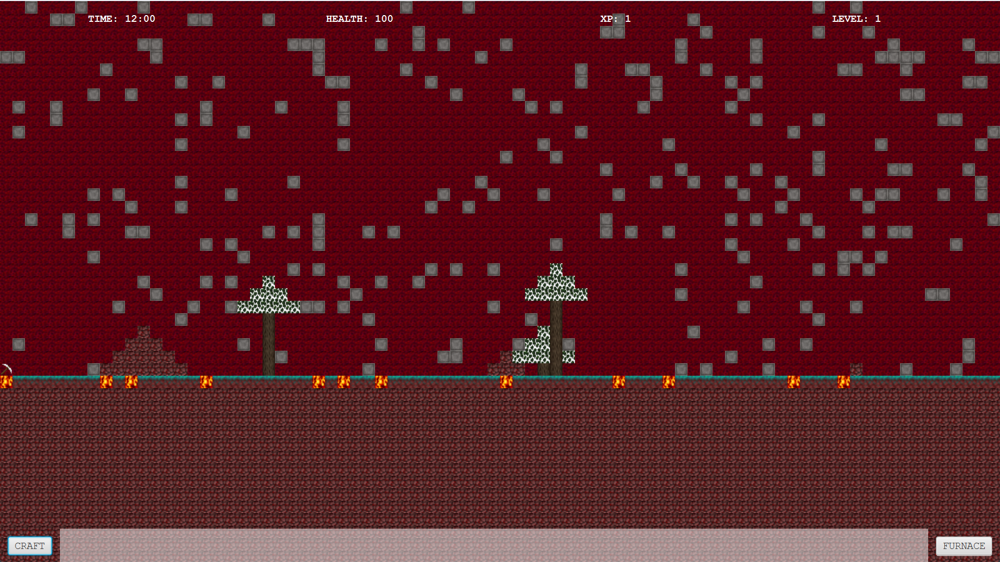

Projet RTX

ㅤ
Implémentation d'un lanceur de rayon en java permettant de
générer des rendus 3D avec la gestion des ombres et des
reflets. Des calculs d'intersections entre les objets sont
effectués afin d'afficher correctement les ombres et les
formes ou encore d'autres calculs pour les couleurs.
Un projet réalisé en groupe de 3.
Développeur autodidacte

ㅤ
Développement du jeu FlatCraft en Java qui s'apparente au
célébre jeu Minecraft en 2D. Nous avons du implémenter les nouvelles
fonctionnalités au fur et à mesure de l'avancée du projet. Un exemple
de fonctionnalité est l'ajout de dimension ou encore de créature en
plus du joueur par exemple.
Un projet réalisé en équipe de 3.
Pokedex

ㅤ
Implémentation d’un Pokédex en Flask.
Cela comprend la conception, l'implémentation et le remplissage d'une base de
données appropriée. Mais aussi la récupération des données d'une API fournie.
Et finalement la création des fichiers HTML et CSS. Un projet réalisé en é
quipe de 5.
Puissance 4

ㅤ
Réalisation du jeu de société Puissance 4 en python.
L'affichage était effectué dans la console de l'interpréteur python
et il était possible de choisir la colonne dans laquelle mettre un pion
grâce à des coordonnées écrites.
Ce projet a été réalisé seul.
Modding
ㅤ
Étant un grand fan de jeux vidéos, j'ai décidé de me lancer dans le modding.
J'ai donc moddé le jeu Project Zomboid en y ajoutant des objets, des recettes
et des compétences. J'ai aussi moddé le jeu Rimworld en y ajoutant des objets
et des recettes. Ces deux projets ont été réalisés respectivement en lua et en C#.